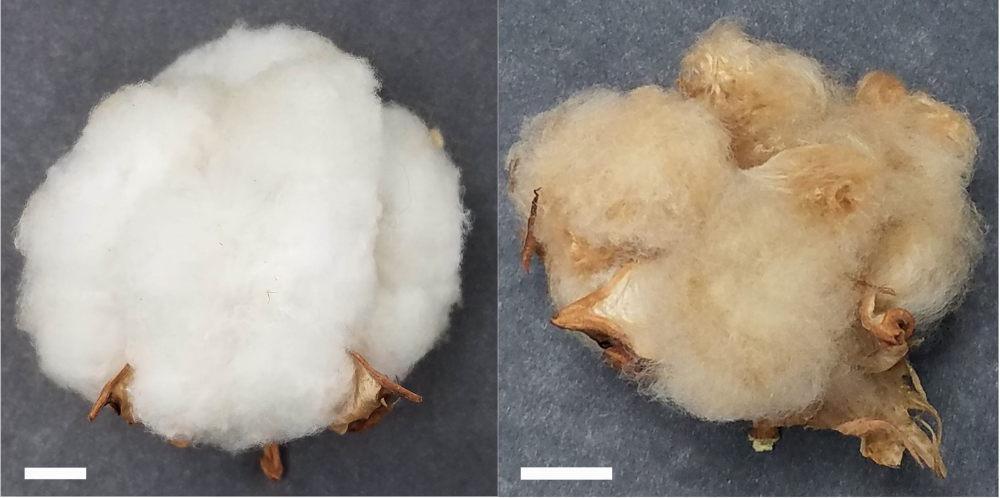
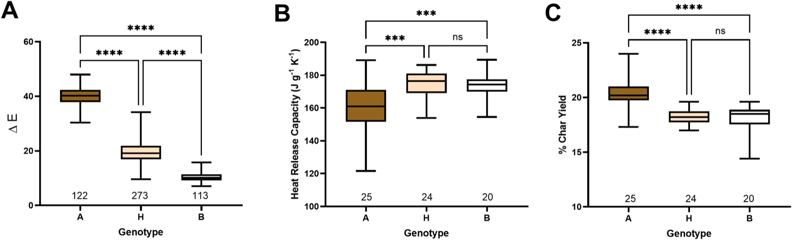
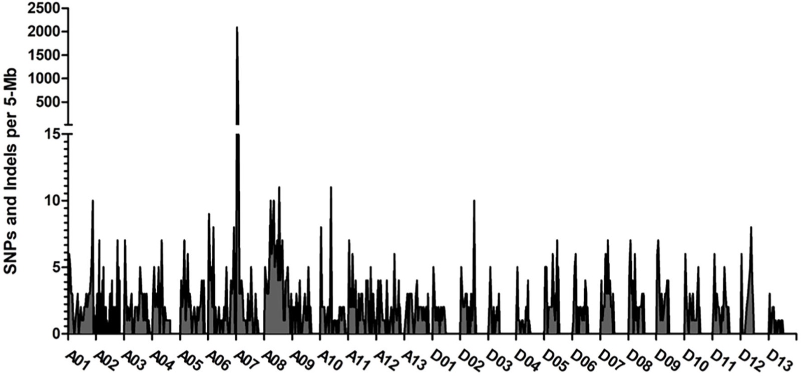
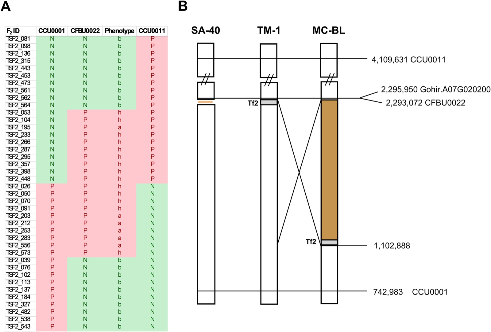
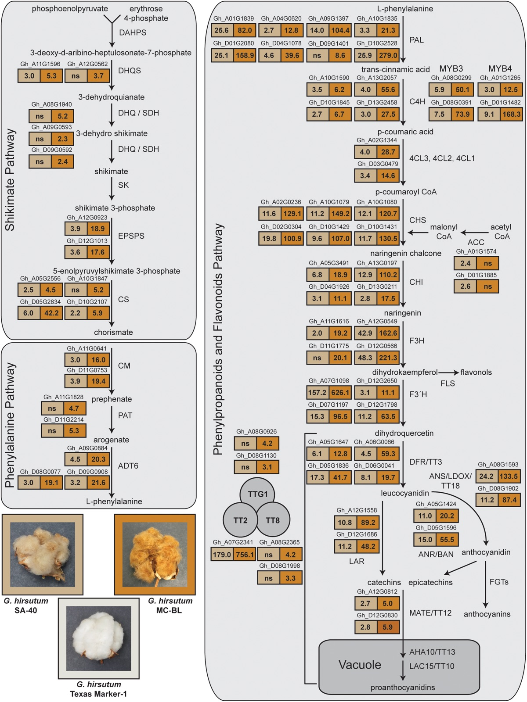

Research / Plant genomics
The Brown Fiber Phenotype in Cotton Line SA-40 Is Linked to a Missing Ty3-like Retrotransposon
Pinnika, G., Thyssen, G.N., Madison, C.A., Li, P., Fang, D.D., Naoumkina, M., Hinchliffe, D.J. (2025). Frontiers in Plant Science 16, 1668965. First author.
My role: Performed the formal analysis and software work, and wrote the original draft. (from the paper's author contributions)
Read the paperSummary
Naturally brown cotton fibers come in several shades and are more flame retardant than white fibers. Up to six loci for brown color are known, but the genes behind most shades were undetermined. We used an F2 population from the rust-brown line SA-40 crossed with the white standard TM-1 to map the color and flame-retardant traits.
Key result. Rust-brown color maps to the Lc1 locus (GhTT2_A07) on chromosome A07. SA-40 lacks a Ty3-like LTR retrotransposon upstream of GhTT2_A07 that is present in all white lines examined, and its absence is associated with higher expression of the gene. The shade of brown appears to follow the expression level of GhTT2_A07.

Approach
- Phenotyping: CIELab color measurements and microscale combustion calorimetry of fibers.
- Mapping: bulked segregant analysis sequencing of 77 brown and 77 white F2 plants (Illumina, 150 bp paired-end), alignment with bwa-mem2 and variant calling with bcftools, followed by subgenome-specific SNP markers on chromosome A07.
- Structural comparison: the upstream sequence of GhTT2_A07 in TM-1, SA-40 and the MC-BL brown line.
- Expression: RNA-seq of developing fibers at 10 days post anthesis across the shikimate, phenylpropanoid and flavonoid pathways.
Results
SA-40 fibers are darker and burn differently
| Line | Color | L* (whiteness) | a* (red) | b* (yellow) | Char yield (%) | Total heat release (kJ/g) |
|---|---|---|---|---|---|---|
| TM-1 | White | 96.49 | 0.64 | 10.25 | 18 | 8.0 |
| SA-40 | Brown | 67.75 | 11.58 | 30.33 | 20 | 7.5 |
Table 1 of the paper (means of three technical replicates).

A missing retrotransposon at Lc1
The strongest difference between the brown and white bulks was on chromosome A07, and fine mapping placed the rust-brown locus at GhTT2_A07. In SA-40 the Ty3-like LTR retrotransposon upstream of the gene is absent with no remnants, which indicates the insertion never occurred in this line. The previously described MC-BL brown line loses the same element through a structural rearrangement and expresses GhTT2_A07 even more highly.



Takeaways
- Two independent routes to the same outcome: losing the retrotransposon upstream of GhTT2_A07 raises its expression and produces brown fiber.
- Expression level of a single gene can explain differences in shade between brown cotton lines.
Figures reproduced from the paper under its CC BY open-access license.